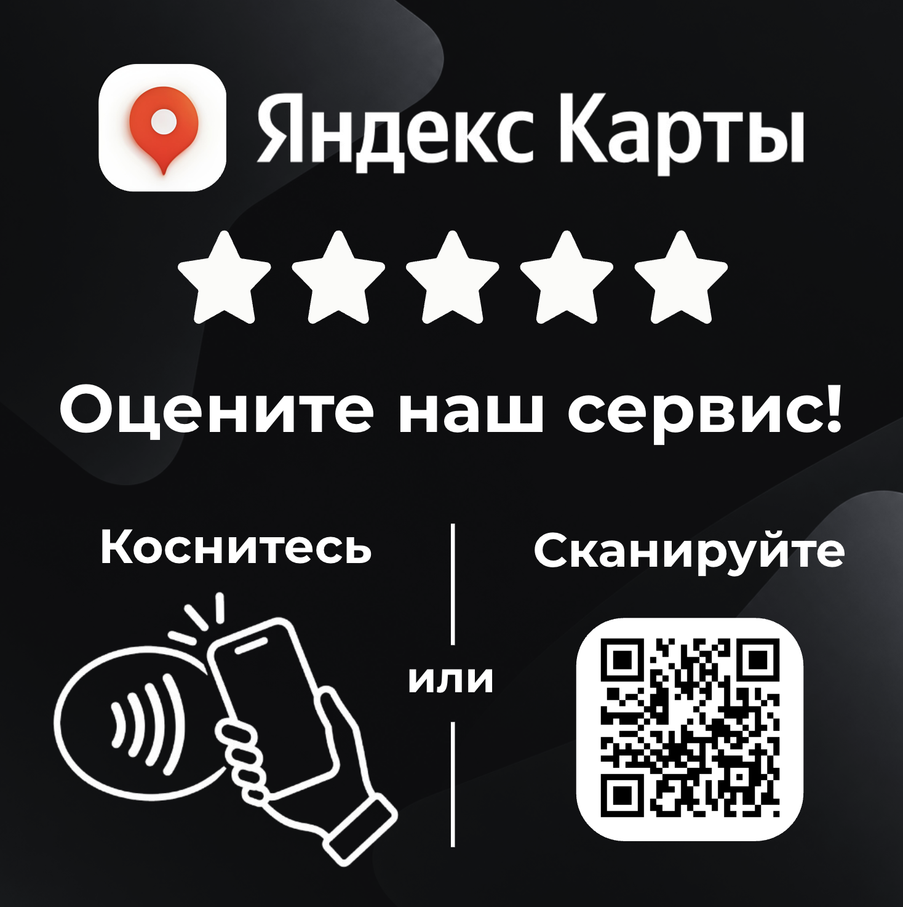

Приложить телефон
или сканировать QR
Смартфон сразу открывает страницу для написания отзыва — без лишних действий.
NFC-метки для бизнеса
Помогите гостям быстро перейти на страницу вашей компании в Яндекс Картах — коснуться метки или отсканировать QR-код.

ГЛАВНОЕ ПРЕИМУЩЕСТВО
Обычный путь может начинаться с поиска:
ПРОСТО ДЛЯ ГОСТЯ
Ссылка на вашу компанию уже записана в метку. Гостю не нужно искать её вручную.
Смартфон сразу открывает страницу для написания отзыва — без лишних действий.
Клиент доволен сервисом и удобством перехода к отзыву.
ВАРИАНТЫ ИЗГОТОВЛЕНИЯ
Выберите готовый дизайн или обсудите индивидуальный вариант.
6 × 6см
Макет с NFC и QR-кодом для перехода на Яндекс Карты. Ссылка настраивается под вашу компанию.
Ваш формат
Другой размер или оформление? Напишите — обсудим задачу и подходящий вариант в личных сообщениях.
Итоговая стоимость и условия изготовления согласуются перед подтверждением заказа.
СЛЕДУЮЩИЙ ШАГ
Оставьте контакты и ссылку на компанию. Я напишу вам, чтобы уточнить детали заказа.